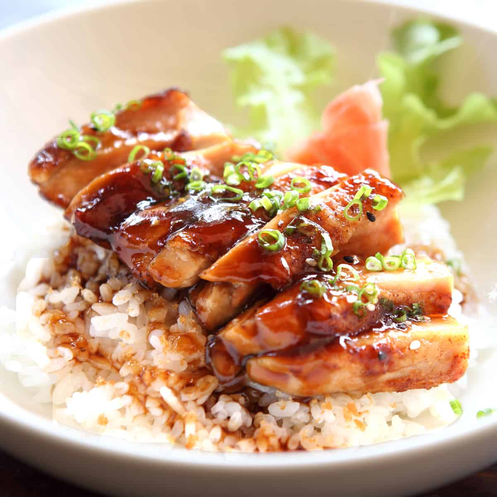

Teriyaki Chicken Recipe

Description
This Teriyaki Chicken recipe will quickly become a new
favorite! In this one pan recipe, bite size chicken breasts
pieces are sautéed in a skillet then coated with an easy and
deliciously flavorful sauce. (taken from Cooking Classy)
Ingredients
- Chicken breasts
- Olive oil
- Low-sodium soy sauce
- Honey
- Brown sugar
- Rice vinegar
- Sesame oil
- Ginger
- Garlic
- Cornstarch
- Sesame seeds
- Green onions
Steps
- Heat oil in a large non-stick skillet or wok.
- Add chicken and let cook (giving space between pieces) until slightly browned on bottom then flip chicken pieces over and cook through.
- While the chicken is cooking whisk together the teriyaki sauce mixture.
- Pour sauce into the skillet once the chicken is just nearly finished cooking through and let the sauce cook and simmer until thickened.
- Easy as that! Serve it warm over brown or white rice with steamed veggies.
*Ingredients and Steps taken from Cooking Classy